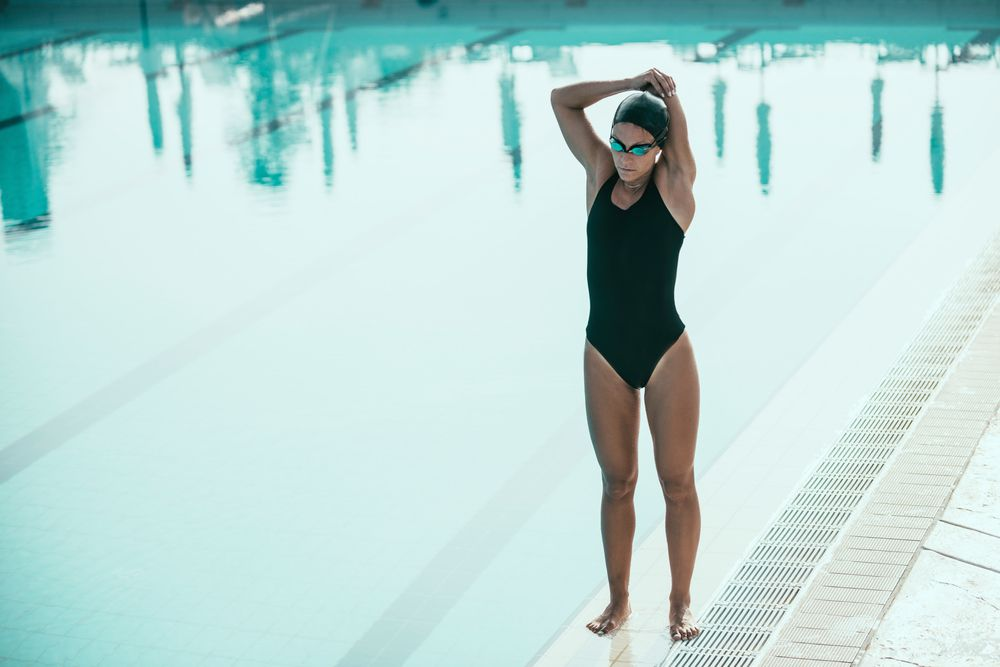

Benefícios da natação
inúmeros benefícios
A natação é considerada um dos esportes mais completos e que possui menos restrições, o único esporte que pode ser praticado desde bebê e um esporte deve ser praticado por todas as crianças, visando não só os benefícios a saúde, más também proporcionar segurança
Saiba mais